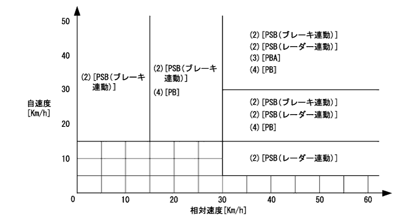

Pre-crash Safety System Function Description |

| (1) Pre-crash Safety System | When the relative speed is approximately 30km/h or less (for pre-crash brake, 15km/h or less) |
| When the vehicle speed is 5km/h or less | |
| When IG OFF and IG ACC | |
| When "PCS SYSTEM CHECK" or "PCS CURRENTLY UNAVAILABLE" is displayed on the multi-information display | |
| When colliding with an object outside the detection area of the pre-crash sensor (side collision, rear collision, etc.) | |
| When the pre-crash sensor cannot detect an object as a collision object | |
| (Not detected: plastic objects such as pylons) | |
| (Not reliably detected: people, motorcycles, trees, animals, snow walls, etc.) | |
| (2) Pre-crash Seat Belt [PSB] | In the case of (1) above |
| When the seat belt is not fastened | |
| (3) Pre-crash Brake Assist [PBA] | In the case of (1) above |
| When the vehicle speed is 30km/h or less | |
| When the driver does not depress the brake | |
| (4) Pre-crash Brake [PB] | In the case of (1) above |
| When the vehicle speed is 15km/h or less | |
| When the pre-crash system cancel switch assembly is pressed | |
| When the object is an oncoming vehicle |